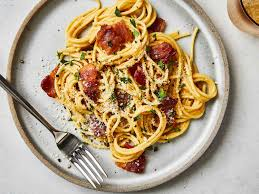

1. Best of Bangladesh
Bangladeshi food is bold, rich, and unforgettable. At the top is Kacchi Biriyani—tender mutton, buttery rice, and soft potatoes layered with spices and slow-cooked to perfection. It’s festive, aromatic, and totally addictive. Don’t miss Shorshe Ilish (hilsa in mustard sauce), Bhuna Khichuri with beef curry, and the tangy street favorite, Fuchka. One bite, and you’re hooked for life.
2. Best of India

Dosa is a golden, paper-thin crepe made from fermented rice and lentil batter—crispy on the outside, soft inside, and totally addictive. It's often stuffed with spicy mashed potatoes (Masala Dosa) and served with coconut chutney and tangy sambar. Hot, crispy, and full of flavor, dosa is more than breakfast—it's a South Indian obsession loved across India and beyond.
3. Best of France

French cuisine is elegance on a plate. The star? Croissant—flaky, buttery, and melt-in-your-mouth perfection, best enjoyed fresh from a Parisian bakery. Other must-tries include creamy Coq au Vin, rich Beef Bourguignon, and delicate Crème Brûlée with its crackly caramel top. Every dish is crafted with care, turning simple ingredients into unforgettable flavors. Bon appétit!
4. Best of Italy
talian food is comfort, love, and flavor in every bite. The all-time favorite? Pizza—crispy crust, rich tomato sauce, gooey cheese, and endless toppings, straight from a wood-fired oven. Don’t miss Pasta Carbonara, creamy and peppery; Lasagna, layered and hearty; and Tiramisu, a dreamy coffee-soaked dessert. Simple, fresh, and totally irresistible—that’s the magic of Italian cuisine.
5. Best of China
Chinese food is bold, diverse, and deeply satisfying. The standout? Peking Duck—crispy skin, tender meat, and sweet hoisin sauce wrapped in soft pancakes. Pure perfection. Also addictive are Dim Sum (bite-sized delights), Sweet and Sour Chicken, spicy Mapo Tofu, and comforting Fried Rice. Every dish is a balance of flavor, texture, and tradition—China on a plate.
6. Best of South Korea

Korean food is fiery, flavorful, and full of soul. The top favorite? Kimchi—fermented, spicy, and tangy cabbage that’s eaten with almost every meal. Other must-tries include sizzling Bibimbap (rice with veggies, meat, and egg), crispy Korean Fried Chicken, and rich, bubbling Kimchi Jjigae (stew). Every bite hits sweet, salty, spicy, and umami—totally addictive and uniquely Korean.
7. Best of Japan
Japanese food is simple, elegant, and incredibly fresh. The star? Sushi—delicate slices of fresh fish atop perfectly seasoned rice, a perfect harmony of taste and texture. Don’t miss Ramen, a rich, savory noodle soup; Tempura, light and crispy fried veggies and seafood; and Matcha desserts, with their subtle, earthy sweetness. Every dish celebrates balance and beauty, making Japanese cuisine truly unforgettable.
8. Best of Thailand

Thai food is vibrant, bold, and bursting with fresh flavors. The ultimate favorite? Pad Thai—stir-fried noodles with shrimp or chicken, crunchy peanuts, lime, and a perfect balance of sweet, sour, and spicy. Also irresistible are Tom Yum Soup (hot and sour), creamy Green Curry, and refreshing Mango Sticky Rice for dessert. Thai cuisine is a colorful explosion of taste that keeps you coming back for more.